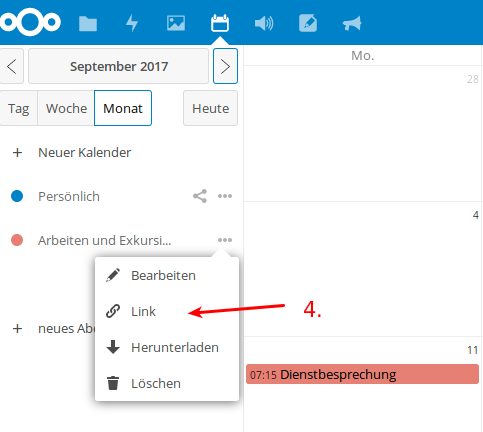
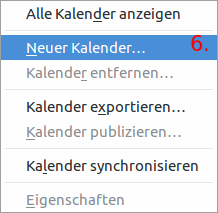
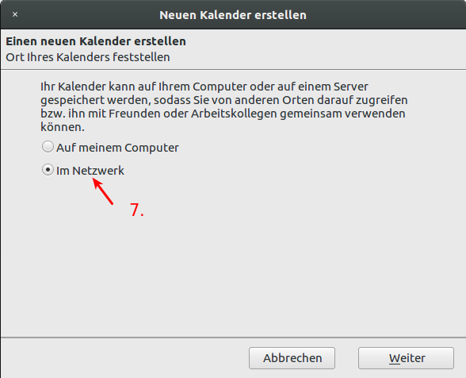
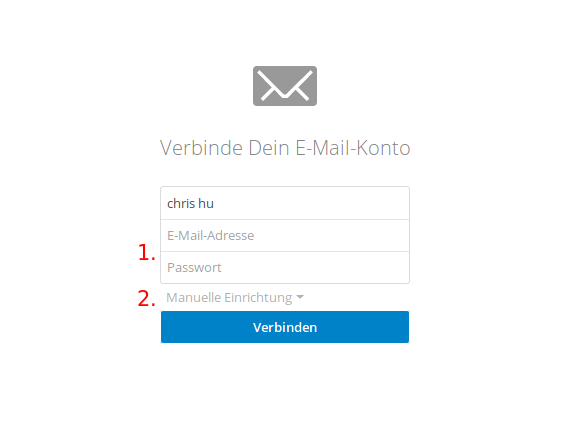
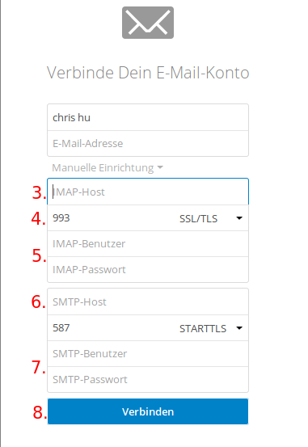
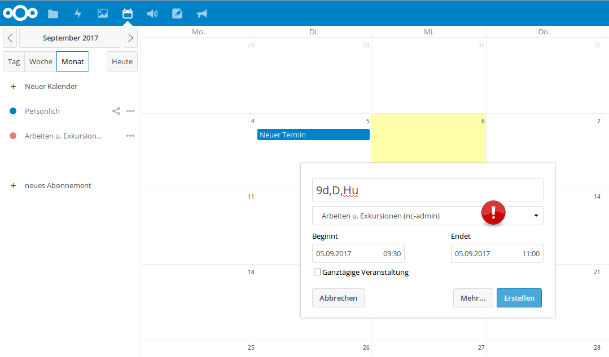
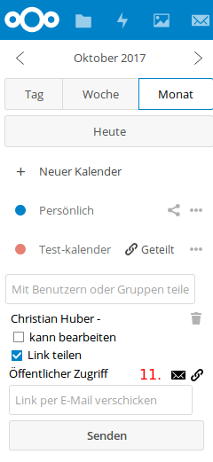

CopBox [1]¶
Seit einiger Zeit verfügen wir über einen eigenen Nextcloud-Server, sodass wir ab jetzt die Vorteile einer Cloud ohne datenschutzrechtliche Bedenken nutzen können. Wenn Sie bereits mit Dropbox, Onedrive, Icloud, GoogleDrive o.ä arbeiten, sind Ihnen die Vorteile einer Cloud sicherlich bekannt.
Vorteile der Cloud¶
- einfaches Synchronisieren von Dateien zwischen Laptop, Handy und dem PC an der Schule (via Browser) und damit problemloser „Transport“ von Dateien.
- Einfaches Teilen von Dateien mit Kollegen, Klassen, Kursen
- Kalenderfunktion
- Notizfunktion
- Onlinebearbeitung von Dokumenten
Zugriff auf die Cloud¶
Zugriff auf die Cloud im Browser erhalten Sie, indem sie auf der Startseite der schuleigenen Homepage auf den Link „copbox“ klicken oder im Browser direkt folgende URL eingeben: https://owncloud.copernicus-gymnasium.de/owncloud
Dort können Sie sich mit ihren Accountdaten anmelden.
Desktop-Client¶
Wie für die herkömmlichen Cloudlösungen auch, existiert auch für Nextcloud ein Programm, mit dem Sie die Cloud auf Ihrem Rechner wie einen normalen Ordner in ihr System integrieren können. Nach der ersten Anmeldung an der Cloud im Browser erscheint ein Pop-up-Fenster, das Ihnen das Herunterladen eines Clients für ihr Betriebsystem anbietet. Haben Sie das Fenster zugemacht und wollen nun aber erneut die Links zu dem Download der Clients sehen, klicken Sie auf der Startseite von Owncloud auf ihren Namen (oben rechts) und wählen Sie den Bereich „Persönlich”.


Hier können Sie ihren persönlichen Cloud-Account konfigurieren und zum Beispiel ein Benutzerfoto hochladen. Wenn Sie etwas nach unten scrollen, werden Sie drei Schaltflächen sehen, die sie zum Download der Desktop-Clients führen.

Hier können Sie die Version des Clients wählen und im Anschluss herunterladen, die ihrem Betriebssystem entspricht. Blau hinterlegt ist der Button für das Betriebsystem, das Sie im Moment verwenden. Die Installation gestaltet sich recht einfach. Sie müssen nach der Installation nur die URL der Cloud eintragen https://owncloud.copernicus-gymnasium.de/owncloud und ihre Zugangsdaten angeben.
Wichtig
Bitte beachten Sie: Wenn Sie das Passwort ihres Zugangs einmal ändern, müssen Sie das neue Passwort im Nextcloud-Programm auf ihrem Rechner natürlich auch entsprechend neu angeben.
Der Inhalt ihres Cloudverzeichnisses auf dem Cloudserver in der Schule wird nach erfolgreichem Verbindungsaufbau direkt auf ihrem Rechner eingebunden.
Mobile Geräte (Android, iOS etc.)¶
Auch für mobile Geräte gibt es Programme, mit denen Sie auf den Inhalt ihres Cloudverzeichnisses zugreifen können. Sie finden diese im Appstore ihres mobilen Gerätes. Der Nextlcoud-Client für Android kostet allerdings so circa einen Euro. Ein kleiner Preis verglichen mit den Vorteilen, die Nextcloud bietet. Das Geld geht an die Entwickler des Projekts. Die Einrichtung eines mobilen Clients geschieht analog zu dem der Desktop-Variante.
Arbeiten mit der Cloud¶
Da vielen Kollegen die Arbeitsweise mit der Cloud noch fremd ist und sie auch noch nicht alle Möglichkeiten unserer Cloud entdeckt haben, erklären die folgenden Abschnitte das Arbeiten mit der Cloud.
Die Startseite¶
Nach der erfolgreichen Anmeldung im Browser gelangen sie zur Startseite der Cloud. Hier sehen sie ihr Cloudverzeichnis und die darin enthaltenen Dateien und Ordner.

Den meisten Platz nimmt die Übersicht über die Ordner und Dateien, die sich in ihrem Cloudverzeichnis befinden (1.). Weiterhin sehen sie am linken Rand einen Bereich, der Ihnen bei Bedarf genauere Informationen über die von oder mit Ihnen geteilten Dateien bietet (2.). Einen schnellen Überblick, wer Ihnen eine Datei oder einen Ordner geteilt hat, finden Sie rechts neben den Dateien/Ordnern. Steht da lediglich “Geteilt”, klicken Sie auf dieses Wort, um genauere Informationen zu erhalten. Links oben neben dem Cloud-Symbol befinden sich die verschiedenen Anwendungen (“Apps”), die Ihnen die Cloud bietet(3.).
Sie sehen folgende Bereiche (von links nach rechts):
- “Dateien”: bringt Sie zurück zur Übersicht ihrer Dateien und Ordner
- “Aktivität”: hier finden sie Informationen über die mit oder von Ihnen geteilten Dateien und wer, wann, was damit gemacht hat.
- “Galerie”: eine Sammlung aller Bilder, die sie auf der Cloud gespeichert haben.
- “Kreise”: bietet die Möglichkeit, Gruppen zu erstellen, um Dateien einfach mit mehreren Benutzern zu teilen.
- “Kalender”: wie der Name schon sagt, können Sie hier einen Kalender führen, andere Kalender einbinden,
diese Kalender mit anderen teilen oder mit den Geräte zu Hause synchronisieren. - “Audio-Player”: bietet Ihnen die Möglichkeit, Audio-Dateien direkt aus der Cloud heraus abzuspielen. - “Notizen”: Raum für Notizen, Gedanken, Einfälle - “Ankündigungen”: Hier finden Sie Mitteilungen des Admins, die sicherlich immer einen Blick wert sind.
Genaueres zu diesen “Apps” finden sie hier “Dateien”
Oben rechts auf der Startseite können Sie nach einem Klick auf die Lupe nach Dateien suchen. Rechts daneben sehen Sie eine Schaltfläche mit einer Glocke. Hier verbergen sich Ankündigungen des Administrators oder sonstige Benachrichtigungen. Ein Klick auf das Icon mit den beiden angedeuteten Personen zeigt Ihnen alle Benutzer der Cloud an, mit denen Sie Dateien geteilt haben. Ganz rechts bringt Sie ein Klick auf das Zahnrad zu den Einstellungen ihres Nutzerprofils (4.)
Unten links sehen Sie die Schaltfläche “Gelöschte Dateien”. Hier verbergen Sie von Ihnen gelöschte Dateien, die sie bei Bedarf wiederherstellen können. Darunter wird Ihnen die aktuelle Belegung Ihres Cloudspeichers angezeigt. Ganz unten finden Sie den Punkt “Einstellungen”. Ein Klick darauf gibt einerseits die Möglichkeit versteckte Dateien in Ihrer Cloud anzuzeigen, andereseits wird hier auch ein WebDav-Link zu ihrem Cloudspeicher erzeugt, mit dessen Hilfe es möglich ist, Ihr Cloudverzeichnis in andere Geräte einzubinden (5.).
Dateien hoch- und herunterladen¶
Der grundlegende Vorteil einer Cloud besteht natürlich darin, dass Sie von überall und mit (fast) allen Geräten auf die Dateien in der Cloud zugreifen können. Dazu müssen die Dateien erst einmal in die Cloud geladen werden. Das kann auf zwei Wegen erfolgen.
1. Dateien mittels eines Desktop-Clients ( Windows, Mac oder Linux) oder einer App (IOs, Android) hochladen¶
Wenn Sie Nextcloud-Client auf ihrem Rechner installiert haben (dazu siehe Desktop-Client) und diesen bei der Ersteinrichung mit der Cloud verbunden haben, wird im Dateisystem ihres Computers ein Ordner erstellt, die direkt mit der Cloud verbunden ist (natürlich nur, solange eine Internetverbindung besteht). Dieser Ordner verhält sich wie jeder andere Ordner auf ihrem PC auch. Dateien und Ordner, die Sie in diesen Cloudordner kopieren, werden sofort in die Cloud hochgeladen. Dateien, die mit Ihnen geteilt werden, werden automatisch in diesen Ordner heruntergeladen. Das ist mit Sicherheit die komfortabelste Methode, um mit der Cloud zu arbeiten. Hinzu kommt außerdem, dass die Daten nun auf ihrem Rechner und in der Cloud vorhanden sind. D.h. sollte, der Cloudserver nicht erreichbar sein oder die Daten dort verschwunden sein, verfügen Sie weiterhin über die Daten, da sie sich ja nun auch auf ihrem Rechner befinden. Den Nextcloud-Client gibt es auch für Android- und IOsgeräte, ja wahrscheinlich sogar für Windows-Smartphones. Wollen Sie also Dateien von ihrem Tablet oder Smartphone in die Cloud bringen oder umgekehrt, empfiehlt sich der Download der Owncloud-App im Appstore ihres Smartphones. Siehe dazu auch: Mobile Geräte (Android, iOS etc.)
Wichtig
Die Verwendung des Nextcloud-Clients ist die beste Art, mit der Cloud zu arbeiten.
2. Dateien mit dem Browser hoch- und herunterladen.¶
Die Cloud bietet Ihnen die Möglichkeit, von überall auf ihre Daten zuzugreifen. Sie benötigen nur eine Internetverbindung und einen Browser. Wie Sie per Browser auf die Cloud des Copernicus-Gymnasiums zugreifen, wurde bereits weiter oben erklärt (siehe Abschnitt Zugriff auf die Cloud) Um im Browser Dateien in die Cloud zu laden, gehen Sie folgendermaßen vor:
- Klicken sie einmal auf das Plus unterhalb des blauen Balkens
- Klicken Sie einmal auf “Hochladen”

- Wählen Sie in dem sich öffnenden Fenster die Datei(en) aus, die sie hochladen möchten (Sie können auch mehrere Dateien im selben Ordner auf einmal auswählen, indem Sie die “Shift-Taste” gedrückt halten und mit den Pfeiltasten die entsprechenden Dateien auswählen).

- Klicken Sie anschließend auf “öffnen”.
- Sie sehen nun einen blauen Balken, der den Fortschritt des Uploads anzeigt. Je nach Größe der Datei(en) kann der Upload eine Weile dauern. Haben Sie Geduld.

- Sie können auch einfach Dateien per “Drag&Drop” vom PC in das Browserfenster ziehen, um Dateien in die Cloud hochzuladen.

Mehrere Dateien und Ordner auswählen¶
Um den workflow zu verbessern können, Sie auch mit mehreren Dateien gleichzeitig arbeiten.
- Bewegen Sie die Maus über die Dateien. Die ganze Zeile in der Übersicht erscheint nur leicht eingegraut.

- Sie werden feststellen, dass sich die Anzeige des Icons verändert hat und nun am rechten Rand der Datei oder des Ordners ein kleines leeres Kästchen zu sehen ist.
- Klicken Sie in dieses Kästchen und es wird mit einem Haken markiert.
- Über der Liste mit Dateien wird nun angezeigt, was Sie alles markiert haben. Dort ist auch ein weiteres leeres Kästchen zu sehen. Wenn Sie dieses anklicken, werden automatisch alle Dateien und Ordner in der Übersicht markiert. So lassen sich viele Dateien auf einmal herunterladen oder teilen.
Erstellen von Dateien und Ordnern in der Cloud¶
Sie können Ordner und Dateien (Textdateien) auch direkt in der Cloud erstellen und bearbeiten (Genaueres zum Bearbeiten von Textdateien finden Sie im Abschnitt dokumente-sk)
- Klicken Sie auf das + Symbol.
- Klicken Sie auf “Ordner” oder “Textdatei”.
- Geben Sie den Namen des Ordners oder der Textdatei an.
Der neu erstellte Ordner oder die angelegte Datei erscheint kurz darauf in der Übersicht ihrer Dateien. Möchten Sie eine Datei in einem bestimmten Ordner verschieben, können Sie das per Drag&Drop erledigen.
Dateien mit anderen teilen¶
Auf der Startseite sehen sie alle Dateien und Ordner, die sich in ihrem Cloud-Verzeichnis befinden. Sie sehen auch, wer Dateien mit Ihnen geteilt hat. (1.) Um Dateien und Ordner mit anderen Personen oder Gruppen zu teilen, klicken auf das Teilen-Symbol (2.).

Es öffnet sich rechts ein Bereich, der Detail des zu teilenden Objekts enthält.
Um eine Datei oder einen Ordner zu teilen, stellen Sie sicher, dass das Wort “Teilen” markiert (fett und unterstrichen) ist (1.). Falls Sie eine Bemerkung zu der ausgewählten Datei abgeben möchten, klicken Sie auf “Kommentare”. Personen, mit denen Sie diese Datei teilen, können diesen Kommentar sehen. Haben Sie auf “Teilen” geklickt, sehen Sie ein Eingabefeld, in das Sie den Namen der Person oder Gruppe eintragen, mit dem Sie die Datei(en) oder Ordner teilen möchten (2.). Erscheint der richtige Name, klicken Sie auf ihn und die Datei oder der Ordner wird mit der entsprechenden Person oder Gruppe geteilt. Setzen Sie den Haken in der Box “Link teilen”, wenn Sie nur den Link zu einem bestimmten Objekt teilen wollen (3.). Den auftauchenden Link können Sie z. B. per Email verschicken. Der Empfänger kann dann auf das verlinkte Objekt zugreifen. Praktisch, wenn Sie eine Datei mit jemandem teilen möchten, der sonst keinen Zugang zu dieser Cloud hat.

Wichtig
Wenn Sie NICHT möchten, dass die Person, mit denen Sie ein Objekt geteilt haben, dieses bearbeiten kann, dann entfernen Sie den Haken neben “kann bearbeiten”.
Neben dem Namen finden Sie weitere Optionen. Setzen Sie den Haken, wenn Sie ein Bearbeiten der Datei etc. erlauben möchten. Wenn Sie dann auf die drei Punkte neben Namen der Person, die etwas geteilt bekommt, klicken, öffnet sich ein Fenster mit verschiedenen Optionen, die es Ihnen erlauben zu bestimmen, was die andere Person mit dem Objekt anstellen darf. Setzen Sie die Haken, wie es Ihnen am besten erscheint.
Die Teilung wieder aufheben¶
Haben Sie versehentlich die falsche Datei geteilt oder etwas mit der falschen Person oder Gruppe geteilt, haben Sie in den Optionen, die sich hinter den drei Punkten verbergen, die Möglichkeit, die Teilung wieder rückkgängig zu machen. Klicken Sie einfach auf den letzten Eintrag in der Liste der Optionen “Freigabe aufheben”.
Das geteilte Objekt verschwindet daraufhin aus dem Cloudverzeichnis der Person(en), mit der Sie es geteilt haben.
Gelöschte Dateien¶
Sollten Sie einmal versehentlich Dateien aus der Cloud gelöscht haben, so lassen sich diese ganz einfach wiederherstellen.
- Im Startfenster der Owncloud sehen Sie links unten eine Schaltfläche “Gelöschte Dateien”.

- Klicken Sie darauf, um sich eine Liste mit den von Ihnen gelöschten Dateien und Ordnern anzeigen zu lassen.
- Klicken Sie auf die Schaltfläche “Wiederherstellen”, um die Datei oder den Ordner wiederherzustellen.

Die Datei bzw. der Ordner befindet sich kurz darauf wieder unter ihren Dateien. Mit einem Klick auf Haussymbol (oben, Mitte links) oder auf die Schaltfläche “Alle Dateien” gelangen Sie wieder zur Startseite zurück.

Die verschiedenen Apps¶
“Dateien”¶
Ein Klick auf dieses Symbol bringt Sie wieder zurück zur Startseite, wo Sie ihre gespeicherten Dateien und Ordner finden. Zur Arbeitsweise mit Dateien und Ordnern siehe Arbeiten mit der Cloud
“Aktivität”¶
“Galerie”¶
“E-Mail”¶
Unsere Copbox verfügt auch über einen E-Mail-Client, mit dem Sie zum Beispiel ihre Dienst-Emailadresse bequem abrufen können. Klicken Sie auf der “App-Leiste” auf den Briefumschlag, um die Mail-App (erstmals) zu starten.

Jetzt kann es Weilchen dauern ( ca. 15 Sekunden), bis die App startet. Sie sehen dann eine Seite, auf der Sie zur Eingabe der Account-Informationen Ihres Email-Zugangs aufgefordert werden.
Konfiguration der Mail-App zum Abrufen der Dienst-Emails¶
Wichtig
Das folgende Vorgehen beschreibt die Konfiguration der Mail-App zum Abrufen ihres Dienst-Emailaccounts. Sie können natürlich auch eine beliebige andere Emailadresse mit der Mail App verknüpfen. Die notwendigen Daten für eine Konfiguration mit einer beliebigen anderen Emailadresse müssen Sie selbst in Erfahrung bringen.
- Geben Sie ihre Dienst-Emailadresse im Feld “E-Mail-Adresse” ein.
- Klicken Sie nun auf “Manuelle Einrichtung”.
Es öffnet sich ein Menu, in dem Sie noch einige Dinge eintragen müssen, um die Mail-App zu konfigurieren.
- Geben im Feld “IMAP-Host” folgendes ein: mbox1.belwue.de
- Klicken Sie auf die Schaltfläche “SSL/TLS” und wählen Sie die Option “STARTTLS” aus.
- Geben Sie nun im Feld “IMAP-Benutzer” ihre Dienst-Emailadresse ein und im Feld “IMAP-Passwort” das Passwort Ihres Dienst-Emailaccounts.
- Tragen Sie im Feld “SMTP-Host” ein: mbox1.belwue.de
Wichtig
Sollte im Feld darunter nicht bereits “587 STARTTLS” voreingestellt sein, klicken Sie auf das kleine Dreieck in diesem Feld und wählen “STARTTLS” aus.
- Im Feld “SMTP-Benutzer” geben Sie bitte erneut Ihre Dienst-Emailadresse ein und im Feld darunter ( “SMTP-Passwort”) erneut der Passwort ihres Dienst-Emailaccounts.
Wichtig
Bitte kontrollieren, ob alle Daten korrekt sind !!!
- Um die Konfiguration abzuschließen, klicken Sie abschließend auf “Verbinden”.
Die App versucht nun, sich mit Ihrem Dienst-Emailaccount zu verbinden. Das kann wieder ein wenig dauern. Hat alles geklappt, öffnet sich die Startseite der Mail-App.
Arbeiten mit der Mail-App¶
War die Konfiguration erfolgreich, wird Ihnen die Startseite der Mail-App angezeigt, sobald Sie auf das Mail-Symbol in der “App-Leiste” der Cloud klicken.

Die Startseite der Mail-App ähnelt herkömmlichen Mail-programmen und der Ansicht diverser Web-Mailer wie web.de o.ä.
Auf der linken Seite (1.) sehen Sie eine Übersicht über die Ordner Ihres Postfachs sowie eine Schaltfläche “+ Neue Nachricht” (das dürfte wohl selbsterklärend sein) In der Mitte (2.) sehen Sie eine Liste mit allen Mails, die sich in Ihrem Postfach befinden. Rechts (3.) zeigt die größte Spalte die aktuell markierte Mail an. Um eine Mail anzuzeigen, klicken Sie auf eine der Mails in der mittleren Spalte.
“Kreise” - Gruppen erstellen¶
Diese App bietet Ihnen die Möglichkeit, Gruppen zu erstellen, um Dateien gleichzeitig mit mehreren Benutzern zu teilen oder an geteilten Dateien zu arbeiten (Oberstufenkurs, Fachschaften, AGs). Es besteht mit dieser App nicht mehr die Notwendigkeit, Gruppen erst in der Schulkonsole anlegen zu müssen, um Dateien mit mehreren Benutzern zu teilen. Die Möglichkeit, eine Gruppe zuerst in der Schulkonsole als Projekt anzulegen, besteht aber weiterhin. Wie man das macht, finden Sie hier: Kurse/ Projekte anlegen Die App erreichen Sie, indem Sie auf das Kreissymbol in der Menuleiste auf der Startseite der Cloud klicken:

Sie werden nun auf die Startseite der “Kreise-App” wieter geleitet.

Die Startseite der App ist in drei Teile gegliedert:
- Hier können Sie eine Gruppe (Kreis) erstellen sowie die Art der Gruppe auswählen.
2. Hier sehen Sie eine Übersicht über alle bereits angelegten Gruppen (Kreise). Sie können hier gezielt nach bestimmten Gruppen suchen oder die Liste der vorhandenen Gruppen filtern nach a) Kreisen, denen Sie angehören oder b) Kreisen, deren Besitzer Sie sind (Kreise, die Sie erstellt haben).
3. Hier sehen Sie eine Übersicht über die momentan ausgewählte Gruppe und ihre Mitglieder. Je nach Art der Gruppe (“Persönliche Kreise”, “Öffentliche Kreise”, “Geschlossene Kreise”, “Geheime Kreise”) können Sie hier weitere Teilnehmer einladen. Wenn Sie der Besitzer/ Ersteller des Kreises sind, können Sie hier immer neue Mitglieder in den Kreis/ die Gruppe aufnehmen.
Einen Kreis erstellen¶
Um eine Gruppe zu erstellen, gehen Sie folgendermaßen vor:
- Geben Sie den Namen des Kreises ein, den Sie erstellen wollen (Bereich 1. oben links).

2. Wählen Sie nun in Dropdown-Menu “Bitte Kreis-Typ wählen” die Art des Kreises aus. Es stehen Ihnen vier Arten von Kreisen zur Verfügung: Die Beschreibung der jeweiligen Kreise entnehmen Sie bitte den fogenden Bildern
2.1 Persönliche Kreise

2.2. Öffentliche Kreise

2.3 Geschlossene Kreise

2.4 Geheime Kreise

Die Beshreibung der Eigenschaften der diversen Kreise können Sie sich jederzeit anzeigen lassen, indem Sie auf die Schaltflächen im linken unteren Bereich klicken. Abschließen klicken Sie auf die Schaltfläche “Creation”, um den Kreis zu erstellen.

Personen zu einem Kreis hinzufügen¶
Nachdem Sie einen Kreis erstellt haben, finden Sie diesen im mittleren Bereich der Seite (2.). Um Personen diesem Kreis hinzuzufügen, klicken Sie den gewünschten Kreis einmal an. Er erscheint daraufhin im rechten Bereich der Seite (3.)

Klicken Sie nun auf das Icon mit der stilisierten Person. Es erscheint eine Eingabefläche, in der Sie nach dem Namen der Person suchen können, die Sie dem Kreis hinzufügen möchten. Klicken Sie die entsprechende Person an und sie wird dem Kreis hinzugefügt. Alle Mitglieder einer Gruppe erscheinen nun in einer Liste. Interessant ist hier vor allem die Spalte “Status”. hier sehen Sie, ob eine Person ihre “Einladung” in die Gruppen bereits bestätigt hat (die Person hat dann den Status “Mitglied”) oder ob eine Person, die Sie eingeladen haben, dieser Einladung noch nicht gefolgt ist ( Status “Eingeladen”). Haben Sie jemanden fälschlicherweise in eine Gruppen eingeladen und möchte Sie diese wieder aus der Gruppe entfernen, klicken Sie auf den Status. Es öffnet sich ein Dropdown-Menu, das Ihnen anbietet, die Person wieder zu entfernen.

Einen Kreis löschen¶
Möchten Sie eine Kreis wieder löschen, wählen Sie im mittleren Bereich (2.) den entsprechenden Kreis aus, indem Sie ihn anklicken. Der Kreis wird nun im rechten Bereich der Seite angezeigt (3.). Klicken Sie rechts oben auf der Mülltonnensymbol, um den Kreis zu löschen. Es erscheint ein Pop-up-Menu, das Sie auffodert, das Löschen zu bestätigen.
Wichtig
Bitte beachten Sie, dass Sie nur dann einen Kreis löschen können, wenn Sie der Eigentümer des Kreises sind.
Dateien mit einem Kreis teilen¶
Mit dem angelegten Kreis können Sie nun Dateien austauschen (wenn Sie Mitglied des Kreises sind). das funktioniert auf die übliche Art und Weise. Siehe dazu Dateien mit anderen teilen
“Kalender”¶
Die Cloud verfügt über eine Kalender-App, mit dem man alle möglichen Termine verwalten kann. So könnten Sie zum Beispiel einen Terminkalender für Ihre eigene Klasse einrichten oder den “Klausuren- und Exkursionenkalender” verwenden. Selbstverständlich können hier angelegte Kalender auch in beliebige Programme (Outlook, Thunderbird etc.) integrieren und mit diesen Programmen den Kalender sehr bequem bearbeiten. Natürlich können Sie mit dem Kalender auch in der Webansicht arbeiten. Im folgenden werden einige der Features erklärt (“Klausuren- und Exkursionenkalender” sowie die Einbindung eines Cloud-Kalenders in ein Email-Programm (hier Thunderbird). Zur Kalender-App gelangen Sie, indem Sie sich über den Link auf der Homepage an der Cloud anmelden. Siehe dazu den folgende Link ( Zugriff auf die Cloud )
Cloud-Kalender in Thunderbird importieren¶
- Auf der Startseite der Cloud auf Kalendericon klicken. (1.)

- Nun auf der linken Seite auf “Arbeiten und Exkursionen klicken. (2.)
- Jetzt neben “Arbeiten und Exkursionen” auf die drei Punkte klicken. (3.)
- Als nächstes auf “Link” klicken. (4.)

5.Den erscheinenden Link markieren und kopieren. (5.)

Jetzt öffnen Sie bitte auf Ihrem Rechner Thunderbird und gehen zur Kalenderansicht: “Termine und Aufgabe” -> Kalender.
- In der Spalte Kalender rechtsklicken und “Neuer Kalender” auswählen (6.)

- Hier als Ort des Kalenders “Im Netzwerk” auswählen und “Weiter” klicken. (7.)

- Im folgenden Fenster als Format “CalDAV” auswählen. (8.)
- Bei “Adresse” den vorhin kopierten Link aus der Cloud einfügen (9.) und auf “Weiter” klicken.

10. Einen aussagekräftigen Namen überlegen und eintippen. Dieser wird nur Ihnen in der Kalenderleiste von Thunderbird angezeigt. (10.) Wählen Sie Farbe aus, um die Termine dieses Kalender von anderen evt. eingerichteten gut unterscheiden zu können.(11.) Geben Sie nun eine Emailadresse auswählen, unter der sie benachrichtigt werden möchten ( z. B. ihre Dienstemailadresse wäre möglich, wenn diese in Thunderbird eingerichtet ist.) (12.) Dann auf “Weiter” klicken.

11. Im darauf folgenden Fenster sollte jetzt die Meldung “Ihr Kalender wurde erstellt” erscheinen. Wenn ja, auf “Fertigstellen” klicken. (13.)

Wichtig
Sie werden nun aufgefordert, einmalig ihre Anmeldedaten für die Cloud einzugeben. Zum Abschließen auf “Fertigstellen” klicken.
12. Der neu angelegte Kalender erscheint nun links in der Leiste “Kalender”. Termine dieses Kalender erscheinen in der von Ihnen ausgewählten Farbe. Diese können Sie nach Belieben ändern, indem Sie nach einem Rechtsklick auf den Namen des Kalenders in der Kalenderleiste auf Eigenschaften klicken. Im aufgehenden Fenster lassen sich nun neben der Farbe auch die Emailadresse und der Zeitintervall, wie oft der Kalender aktualisiert werden soll, einstellen.
Arbeiten mit einem Kalender in einem Email-Programm (Hier am Beispiel Thunderbird)¶
- Im Kalenderfenster von Thunderbird (Termine und Aufgaben -> Kalender) Doppelklick in ein Feld.

Im nun erscheinenden Fenster können die Parameter ihres Termins angeben: Titel des Termins (1.), Dauer des Termins (2.), ob sich der Termin wiederholen soll (3.), ob sie per Mail an den Termin erinnert werden wollen (4.), genauere Beschreibung des Termins (5.).
Wichtig
Bitte achten Sie darauf, dass Sie den anzulegenden Termin in den richtigen Kalender eintragen!!!!! (6.)
- Wenn Sie mit ihren Angaben zufrieden sind, klicken Sie auf “Speichern und schließen”. (7.)
3. Wenn Sie einen Termin in einen Kalender eingetragen haben, der sich irgendwo im Netz befindet (zum Beispiel ein Kalender in der Cloud), klicken Sie auf “Synchronisieren”, um den angelegten Termin mit dem entfernten Kalender sofort zu synchronisieren.

Eine Klassenarbeit oder eine Exkursion eintragen¶
Seit Schuljahresbeginn (2017/18) existieren für die Lehrer mehrere Kalender in der Cloud, in die jeder seine Klassenarbeiten und Exkursionen eintragen kann.

Für jede Klasse bzw. Klassenstufe wurde ein eigener Kalender erstellt! Damit die Übersichtlichkeit gewahrt bleibt, kann man alle Kalender, die man nicht zu sehen wünscht, mit einem Klick auf den farbigen Punkt links neben dem Kalendernamen, ausblenden. Übrig bleiben in der Terminübersich rechts dann nur die farbig markierten Kalender. Ziel dieser Kalender ist es, den z.T. unübersichtlichen Plan, in den jeder handschriflich seine Arbeiten eingetragen hat, zu ersetzen. Der Vorteil liegt auf der Hand: Man kann in Ruhe zu Hause seine Klassenarbeit planen und eintragen, da die Kalender rund um die Uhr auch von zu Hause (oder von anderswo) aus erreichbar sind. Man kann diese Kalender bequem in ein Email-Programm mit Kalenderfunktion einbinden (Thunderbird, Outlook, Apple-Variante) oder auch in eine entsprechende App einbinden, um die Kalender auch auf mobilen Geräten verfügbar zu machen. Wie man einen Termin in einem Email-Prgramm anlegt hat das vorige Kapitel beschrieben (Für Outlook und andere gilt ein ähnliches Vorgehen). Dieses Kapitel beschreibt, wie man eine Klassenarbeit oder eine Exkursion in diese Kalender einträgt, wenn man die Kalender im Browser benutzt.
Wichtig
Allerdings sollten Sie folgende Punkte bedenken: Der Netzwerkberater stellt die Funktionalität bereit und ist nicht für fehlerhafte oder nicht korrekt angelegte Einträge verantwortlich. Vergewissern Sie sich daher bitte immer,a) ob der Inhalt des Eintrags korrekt ist, b) der Eintrag in dem richtigen Kalender (“Arbeiten u. Exkursionen”) angelegt wurde und c), dass der Eintrag gespeichtert wurde. Bedenken Sie weiterhin, dass Sie die Einträge der Kollegen verändern und löschen können. Bitte vermeiden Sie dies unbedingt.
Wenn Sie nun also eine Klassenarbeit oder eine Exkursion in den gemeinsamen Kalender eintragen möchten und dabei die Webansicht des Kalender verwenden möchten, gehen bitte wie folgt vor:
- Zugriff auf die Cloud
- Klicken Sie Hauptfenster in der Leiste der Apps auf das Kalendersymbol
3. Sie werden zur Kalender-App weitergeleitet. Die meisten Platz auf dem Bildschirm nimmt die Kalenderübersicht ein. Ein Kästchen pro Tag. Links oben sehen sie den angezeigten Monat und das Jahr. Klicken Sie auf die Pfeile links oder rechts neben Anzeige von Monat und Jahr, um zum gewünschten Termin zu gelangen. Klicken Sie auf die Schaltflächen “Tag”, “Woche”, “Monat” oder “Heute”, um die Ansicht zu ändern. Die Übersicht rechts verändert sich entsprechend. Weiterhin sehen Sie links alle Kalender die sie angelegt haben, oder die mit Ihnen geteilt wurden. Das sind wahrscheinlich nur zwei. Ein blau markierter mit dem Namen “Persönlich” für ihre eigenen Termine und einen rot markierten darunter mit dem Namen “Arbeiten und Exkursionen”.

4. Um eine Klassenarbeit oder eine Exkursion in diesem Kalender einzutragen, doppelklicken Sie auf das gewünschte Datum in der Übersicht. Es öffnet sich ein Fenster, in das sie bitte den Namen des Eintrags eintragen (“Titel der Veranstaltung”) sowie die Dauer (die Uhrzeit).
Wichtig
Um die Übersichtlichkeit zu erhöhen und um für ein einheitliches Erscheinungsbild zu sorgen halten Sie sich bitte an folgende Schreibweise: Klasse,Fach,Lehrerkürzel. Zum Beispiel: 9d,D,Hu

Wichtig
Achten Sie darauf, dass Sie den richtigen Kalender ausgewählt haben. Klicken Sie auf das Dropdown-Menu und wählen Sie den Kalender derjenigen Klasse, in den Sie eine Klassenarbeit oder eine Exkursion eintragen möchten, z. B. “6a”.
Sind alle Angaben korrekt und der richtige Kalender ausgewählt, klicken Sie auf die Schaltfläche “Erstellen” unten rechts.
Wenn alles geklappt hat, erscheint der Termin in der Kalenderübersicht in roter Farbe! Der Termin ist nun für alle anderen Kollegen sichtbar.

Einen neuen Kalender erstellen und diesen mit anderen teilen¶
Selbstverständlich können Sie auch selbst einen weiteren Kalender erstellen und diesen mit anderen Personen oder Gruppen teilen: 1. Öffnen Sie die Kalender-App und klicken Sie links auf die Schaltfläche “+ Neuer Kalender”

- Geben Sie nun in dem darunter liegenden Feld einen Namen für den neuen Kalender an.
- Wenn Sie möchten, wählen Sie eine Farbe für diesen Kalender aus.
- Klicken Sie abschließend auf “Erstellen”, um den Kalender anzulegen.

- Sie finden den neu angelegten Kalender nach einem kurzen Moment in der Liste der Kalender (diese ist alphabetisch sortiert, allerdings steht der “Persönliche Kalender” immer ganz oben).
- Um diesen Kalender mit anderen Personen oder Gruppen/Kreisen zu teilen, klicken sie auf das Teilen-Symbol.
- Tippen Sie den Namen der Person (mit dem Vornamen beginnend) oder Gruppe ein und
- Klicen Sie auf den entsprechenden Eintrag.
- Haben Sie die falsche Person oder Gruppe ausgewählt, klicken Sie auf das Mülleimer-Symbol neben dem Personen- oder Gruppennamen, um die Teilung mit diesen Personen oder Gruppen rückgängig zu machen.
- Setzen Sie den Haken neben “kann bearbeiten”, wenn Sie möchten, dass die Person oder die Mitglieder der Gruppe, mit denen Sie den Kalender teilen, diesen auch bearbeiten (Termine eintragen, löschen, verändern) sollen dürfen. Setzen Sie den Haken nicht, wenn die Personen oder Gruppen, mit denen Sie diesen Ordner teilen, diesen nur lesen (anschauen) dürfen.
11. Setzen Sie den Haken neben “Link teilen”, wenn Sie den Kalender mit jemandem teilen möchten, der kein Nutzer der Copbox ist. Klicken Sie auf den schwarzen Briefumschlage, und geben Sie dazu in das erscheinende Feld (“Link per E-Mail versenden”) die Emailadresse der betreffenden Person ein und klicken Sie abschließend auf “Senden”.
“Audio-Player”¶
“Ankündigungen”¶
Benutzerhandbuch¶
Weitere Informationen finden Sie im englischsprachigen Benutzerhandbuch von Nextcloud, das Sie unter folgender URL finden: https://docs.nextcloud.com/server/12/user_manual/
| [1] | Im Sommer 2017 haben wir eine technische Änderung vorgenommen und sind von Owncloud zu Nextcloud gewechselt. Zu erreichen ist die neue Cloud aber unter dem alten Namen https://owncloud.copernicus-gymnasium.de/owncloud. |